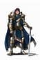
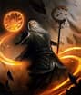
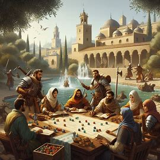
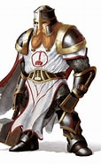
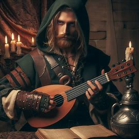
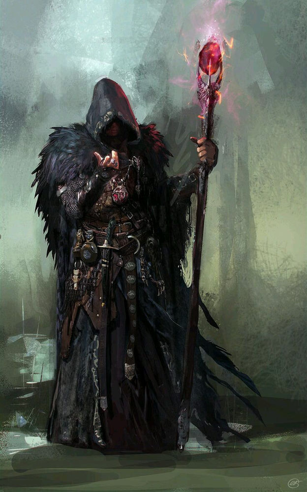
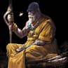

Em Dungeons & Dragons (D&D) 5ª Edição, você entra em um mundo de fantasia onde sua imaginação é o limite. Seja um poderoso guerreiro enfrentando dragões, um sábio mago manipulando os elementos, ou um furtivo ladino driblando armadilhas, as possibilidades são infinitas. Vamos mergulhar nos três pilares fundamentais do sistema: atributos, raças e classes.
Atributos
- Força: Este atributo mede a força física bruta do seu personagem. Representa o quão bem você pode esmagar uma maçã, erguer uma pedra ou golpear um inimigo em combate corpo a corpo.
- Destreza: A destreza está relacionada à agilidade e reflexos do seu personagem. Determine quão habilidoso você é em desviar de ataques, escalar paredes ou desarmar armadilhas.
- Constituição: Este atributo reflete a saúde e resistência do seu personagem. Quanto maior sua constituição, mais capaz você é de resistir a doenças, venenos e danos físicos.
- Inteligência: A inteligência representa o intelecto e a capacidade de raciocínio do seu personagem. Quanto mais inteligente, mais habilidoso você será em resolver quebra-cabeças, recordar informações e lançar magias complexas.
- Sabedoria: Sabedoria engloba a percepção, intuição e bom senso do seu personagem. É o seu conhecimento prático do mundo ao seu redor, além de ser capaz de distinguir entre o bem e o mal.
- Carisma: Carisma mede o charme, liderança e persuasão do seu personagem. Determine quão bem você pode convencer outros personagens, liderar um grupo ou intimidar seus oponentes.
Raças
As raças em D&D representam os diferentes tipos de seres que habitam o mundo, cada um com sua própria história, cultura e estilo de vida. Aqui estão algumas das raças mais comuns:
- Humanos: Versáteis e adaptáveis, os humanos são encontrados em todos os cantos do mundo de D&D. Sua diversidade cultural e capacidade de se adaptar a diferentes ambientes os tornam populares entre os aventureiros.
- Elfos: Elegantes e graciosos, os elfos são conhecidos por sua longevidade e afinidade com a natureza. Eles são habilidosos arqueiros e magos, e muitas vezes vivem em harmonia com as florestas.
- Anões: Resistentes e obstinados, os anões são mestres na arte da forja e da guerra. Eles valorizam a honra, o trabalho árduo e a lealdade à sua comunidade.
- Halflings: Pequenos e ágeis, os halflings são conhecidos por sua natureza amigável e amor pela boa comida. Eles são habilidosos em evadir perigos e muitas vezes vivem em comunidades agrícolas pacíficas.
- Meio-Elfos: Meio-elfos herdam traços de ambas as raças, combinando a versatilidade dos humanos com a graça dos elfos. Eles muitas vezes se sentem como estrangeiros em ambos os mundos, mas também podem servir como mediadores entre humanos e elfos.
Classes
Guerreiro
Mestres das armas e da armadura, os guerreiros são especialistas em combate corpo a corpo. Eles podem usar espadas, machados, lanças e escudos para proteger seus aliados e derrotar seus inimigos.
- Arma:** Espada, machado, escudo
- Habilidades:** Combate corpo a corpo, defesa, intimidação
- Estilo de Jogo:** Combate Corpo a Corpo, Tanque
Mago
Dotados de conhecimento arcano, os magos lançam poderosas magias para controlar o campo de batalha e eliminar seus oponentes. Eles podem usar cajados, adagas e grimórios para canalizar sua magia.
- Arma:** Cajado, adaga, grimório
- Habilidades:** Magias de ataque, controle de multidões, cura
- Estilo de Jogo:** Dano à Distância, Controle de Multidões
Ladino
Especialistas em furtividade e astúcia, os ladinos são mestres em se mover nas sombras e desarmar armadilhas. Eles podem usar adagas, arcos e armaduras leves para atacar seus inimigos de surpresa.
- Arma:** Adaga, arco, armadura leve
- Habilidades:** Furtividade, acrobacia, enganação
- Estilo de Jogo:** Combate à Distância, Furtividade
Clérigo
Servos dos deuses, os clérigos canalizam poder divino para curar feridas, banir o mal e proteger os indefesos. Eles desempenham papéis vitais em um grupo, fornecendo cura e suporte espiritual durante as batalhas.
- Arma:** Cajado, maça
- Habilidades:** Cura, magias de proteção, exorcismo
- Estilo de Jogo:** Cura, Suporte
Bardo
Músicos e artistas talentosos, os bardos usam suas habilidades musicais e mágicas para inspirar seus aliados, confundir seus inimigos e manipular o ambiente ao seu redor. Eles são versáteis e podem desempenhar diferentes papéis em um grupo.
- Arma:** Besta, espada curta
- Habilidades:** Inspiração, magias de ilusão e encantamento
- Estilo de Jogo:** Suporte, Controle de Multidões
Bruxo
Feiticeiros que fizeram pactos com entidades sobrenaturais, os bruxos canalizam poder arcano de fontes além da magia tradicional. Eles são especialistas em magias de controle e evocação, e podem causar grandes estragos em seus oponentes.
- Arma:** Adaga, grimório
- Habilidades:** Magias de evocação, maldição, controle de multidões
- Estilo de Jogo:** Dano à Distância, Controle de Multidões
Monge
Mestres das artes marciais, os monges combinam força física e disciplina mental para lutar com seus punhos e pés. Eles são especialistas em combate corpo a corpo e podem realizar acrobacias e movimentos impressionantes.
- Arma:** Nunchaku, bastão
- Habilidades:** Ki, artes marciais, cura
- Estilo de Jogo:** Combate Corpo a Corpo, Cura